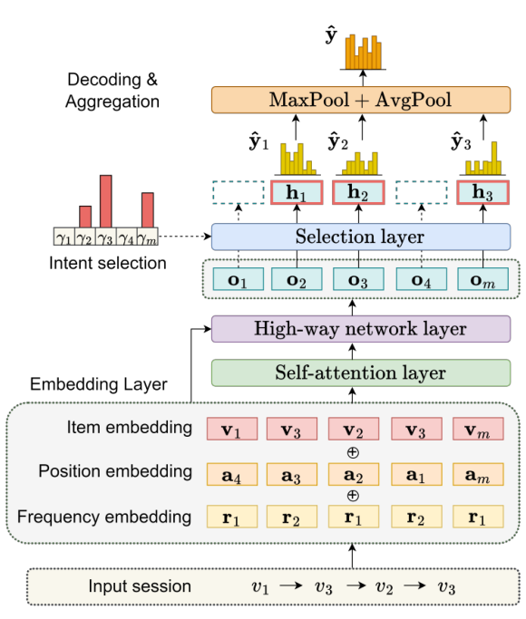

Multi-intent-aware Session-based Recommendation (多意图感知的会话推荐)
- 会议/期刊: SIGIR 2024 (short paper, 5 pages)
- 作者与机构: Minjin Choi, Hye-young Kim, Hyunsouk Cho, Jongwuk Lee (成均馆大学 / 亚洲大学)
- 推荐链路定位: 召回（匿名会话 Next-Item 预测）
- 研究方向: 序列与会话推荐
- 论文原文: 论文原文链接
- 开源代码: 开源代码仓库链接
TL;DR (1分钟核心速览)
现有 SBR 模型把整个会话压成单一表征，并被最后一个点击主导，无法表达会话中并存的多个用户意图，长会话下掉点严重。MiaSRec 以「每物品为中心」生成 \(|s|+1\)个意图表征，用 α-entmax 稀疏打分动态筛出\(k\) 个重要意图，再对各自解码的物品分布做 max/avg 双池化聚合。在 6 个基准、标准 iterative-revealing 全库排序协议下全面最优，长会话数据集 Tmall 上 R@20 相对最佳基线提升 24.56%，M@20 提升 6.27%。
Background & Motivation (背景与核心矛盾)
- 主流范式: SBR 用 RNN/GNN/Transformer 编码会话物品序列，池化或取末位得到一个会话向量，再与物品表内积召回；近期的多表征模型（ComiRec/Re4/Atten-Mixer/MSGIFSR、以及长历史兴趣建模 SINE）试图建模多兴趣。
- 前人局限: (i) 单表征模型受末位物品支配（图 1 中用户最后点 "camera"，但全会话实为 travel 倾向），且会话越长、意图越杂，掉点越狠（Diginetica 上 CORE 长会话比短会话掉 13.2%）；(ii) 已有"多兴趣"方法要么只看最后几个连续物品（末位噪声即失效），要么固定兴趣数 \(K\)，对所有用户切同一刀，漏掉真实兴趣或塞入冗余兴趣。
- 核心洞察 (Key Insight): 会话中的每个物品都可作为一个"意图锚点"，会话内重复出现的物品天然指示意图强度；而意图的数量应随会话而变，是一个可变基数的稀疏选择问题，而非固定槽位分配。
- 本文切入点: 物品级多表征 + α-entmax 稀疏选择实现"每会话自适应 \(k\)"的意图集合，并保留多条意图的独立解码结果。
Method (核心方法设计)
1. 整体框架 (Overall Architecture)
输入会话 \(s=(v_{t_1},...,v_{t_{|s|}})\)，为每个物品构造 item + absolute position + frequency 三合一嵌入（并额外加一个全局均值向量\(v_m\)作为第\(|s|+1\)个 token）。经双向 self-attention 得上下文表征\(c_i\)，再以 highway 门控把原始物品嵌入与上下文融合成意图表征\(o_i\)。随后 α-entmax 打出稀疏重要性权重\(\gamma\)，仅保留\(\gamma_i>0\)的\(o_i\)作为意图集合\(\{h_1,...,h_k\}\)。每个\(h_i\)经 L2 归一化后与共享物品嵌入表内积得独立分布\(\hat{y}_i\)，最终 max/avg 双池化融合为\(\hat{y}\)，交叉熵（带温度\(\tau\)）训练。
flowchart TD
A["会话物品序列 + 位置嵌入 + 频次嵌入 + 均值向量"] --> B["Bi-directional Self-Attention 上下文编码"]
B --> C["Highway 门控融合 -> 物品级意图表征 o_i"]
C --> D["α-entmax 稀疏重要性筛选 -> 可变 k 个意图 h_i"]
D --> E["各自余弦解码为物品分布 y_i"]
E --> F["MaxPool + AvgPool 加权聚合 -> top-N 推荐"]
2. 关键设计拆解 (Key Designs)
- 频次嵌入 + 逆序位置嵌入（让"重读"与"顺序"同时可见）：痛点在于"同一物品被反复点击"所体现的意图强度被普通序列编码器抹平。做法是给第 \(i\)个位置赋予可学习向量\(r_{f_i}\)，\(f_i\)为该物品在会话内的出现次数（如\(s=(v_1,v_3,v_2,v_3)\)的频次为\((1,2,1,2)\)），并与 item、位置嵌入相加：\(x_i = v_{t_i} + a_i + r_{f_i}\)。序列按逆序输入使末位物品固定占位 1，从而位置嵌入显式编码"距当前多远"。直觉：频次是意图的免费统计先验，无需额外监督信号。
- α-entmax 动态意图筛选（把"选几个"变成可学习问题）：固定 \(K\)的兴趣模型会漏采/过采。MiaSRec 用稀疏变换求解\(\alpha\text{-entmax}(z)=\arg\max_{p\in\Delta^l} p^\top z + H^\alpha_T(p)\)，\(\alpha=1.5\)（\(\alpha=1\)退化为 softmax，\(\alpha=2\)为 sparsemax），以\(\gamma=\alpha\text{-entmax}(w\cdot[o_1;...;o_{|s|};o_m]^\top)\)生成权重并仅保留\(\gamma_i>0\)的意图。物理直觉：entmax 的精确零等价于硬性剪枝，噪声物品（图 1 的 "speaker"）被赋予 0 权重而直接退出计算，\(k\)随会话自适应变化，上限为\(|s|+1\)。
- 双池化解码聚合与训练目标：\(k\)条意图各自解码\(\hat{y}_i=\tilde{h}_i\tilde{V}^\top\)（复用共享物品表，不增参数），聚合式为\(\hat{y}=\beta\,\text{MaxPool}(\hat{y}_1..\hat{y}_k)+(1-\beta)\,\text{AvgPool}(\cdot)\)：max 保留各意图的主峰（提高多样性覆盖），avg 捕捉跨意图的一致偏好（稳住主答案）。损失为带温度的交叉熵\(\mathcal{L}=-\sum_j y^{(j)}\log\frac{\exp(\hat{y}^{(j)}/\tau)}{\sum_i\exp(\hat{y}^{(i)}/\tau)}\)；训练无需负采样（全物品 softmax），推理侧需对\(k\)个意图各做一次全库打分，开销约为单表征模型的\(k\) 倍。
Experimental Setup & Evaluation Protocol (实验设置与评估协议)
- 数据集与预处理: 沿用 SBR 通用流程——丢弃单物品会话、丢弃全库出现次数 < 5 的物品（近似 5-core 过滤），按时间戳 8:1:1 时序划分训练/验证/测试。
| 数据集 | #Users | #Items | #Interactions | 稀疏度/平均长度 | 特征/场景说明 |
|---|---|---|---|---|---|
| Diginetica | — | 42,862 | 786,582 | AvgLen 4.12 | 电商，短会话基准 |
| Retailrocket | — | 51,428 | 871,637 | AvgLen 6.40 | 电商点击流 |
| Yoochoose | — | 19,690 | 1,434,349 | AvgLen 4.64 | 电商（RecSys Challenge） |
| Tmall | — | 37,367 | 427,797 | AvgLen 10.62 | 电商，长会话 |
| Dressipi | — | 18,059 | 4,305,641 | AvgLen 6.47 | 时尚电商，交互最密 |
| LastFM | — | 38,616 | 3,510,163 | AvgLen 8.16 | 音乐流媒体，长会话 |
（原文未报告去重用户数，仅给 #Interacts / #Sessions / #Items。） - 数据划分与防穿越: 全局时序（chronological）按 8:1:1 切分，测试集严格在训练时间之后，避免未来交互泄漏。 - 排名评测协议: 采用 SBR 标准 iterative revealing（逐步揭示） 协议——从会话中依次暴露物品、预测下一个物品；对全部物品全集打分（Full-Ranking，无负采样、无候选裁剪），报告 Recall@20 / MRR@20。 - 对比基线与超参: 12 个基线，含序列类（SASRec）、GNN 类（SR-GNN、NISER+、SGNN-HN、DSAN、LESSR、CORE）与多表征类（SINE、ComiRec、Re4、Atten-Mixer、MSGIFSR）；统一在 RecBole 复现，\(d=100\)、max session length 50、Adam lr=0.001、batch=1024；MiaSRec 取\(\alpha=1.5\)，\(\tau\in\{0.01,...,1\}\)、dropout、\(\beta\in[0,1]\)步长 0.1 搜索；三次不同种子取均值，paired t-test，\(\rho<0.01\) 显著。
Key Experimental Results (实验关键数据)
1. 主实验对比 (Main Results)
| Dataset | Metric | SR-GNN | NISER+ | DSAN | CORE | ComiRec | Re4 | Atten-Mixer | MSGIFSR | MiaSRec | Improv. |
|---|---|---|---|---|---|---|---|---|---|---|---|
| Diginetica | R@20 | 48.01 | 51.11 | 52.06 | 52.89 | 51.22 | 51.59 | 49.84 | 53.20 | 53.54 | +0.65% |
| Diginetica | M@20 | 16.60 | 18.21 | 18.25 | 18.53 | 18.35 | 18.47 | 17.07 | 18.37 | 19.47† | +5.04% |
| Tmall | R@20 | 33.47 | 40.39 | 42.82 | 44.91 | 42.40 | 41.56 | 38.76 | 35.39 | 55.94† | +24.56% |
| Tmall | M@20 | 24.75 | 29.48 | 30.85 | 31.59 | 28.43 | 28.56 | 28.52 | 22.19 | 33.57† | +6.27% |
| Dressipi | R@20 | 36.10 | 38.19 | 37.77 | 38.14 | 39.60 | 39.15 | 37.75 | 38.43 | 42.26† | +6.73% |
| Dressipi | M@20 | 14.51 | 15.34 | 15.13 | 15.54 | 16.07 | 15.92 | 15.24 | 15.90 | 16.70† | +3.92% |
| LastFM | R@20 | 21.80 | 22.50 | 22.47 | 22.75 | 22.13 | 23.02 | 22.93 | 22.73 | 25.85† | +12.32% |
| LastFM | M@20 | 8.70 | 8.79 | 7.93 | 7.83 | 7.83 | 8.50 | 8.74 | 8.20 | 9.95† | +13.06% |
（† 表示相对最佳基线的 paired t-test \(\rho<0.01\) 显著；表中省略 Retailrocket / Yoochoose，其 R@20 分别为 63.37 / 65.37。）
2. 消融实验 (Ablation Study)
| 变体 | Diginetica R@20 | Diginetica M@20 | Retailrocket R@20 | Yoochoose R@20 |
|---|---|---|---|---|
| MiaSRec (full) | 53.54 | 19.47 | 63.37 | 65.37 |
| w/o Position Embedding \(a_i\) | 51.36 | 18.15 | 61.06 | 61.13 |
| w/o Frequency Embedding \(r_{f_i}\) | 53.48 | 19.23 | 63.28 | 65.15 |
| 单一表征 mean (\(o_m\)) | 52.73 | 18.66 | 61.70 | 64.71 |
| 末位表征 last-1 ($o_{ | s | }$) | 52.34 | 18.37 |
| 固定 last-3 | 53.08 | 19.20 | 62.07 | 64.77 |
| 固定 last-5 | 53.38 | 19.29 | 63.01 | 65.13 |
3. 关键实验发现 (Key Findings)
- 收益与平均会话长度强正相关：AvgLen 仅 4.64 的 Yoochoose 上 R@20 只涨 0.26%（65.20→65.37），而 AvgLen 10.62 的 Tmall 从 44.91 跳到 55.94（+24.56%）、LastFM 从 23.02 到 25.85（+12.32%）。这直接验证了"多意图在长会话中才真正展开"的动机，而非普适性涨点。
- 位置嵌入是硬需求，频次嵌入是精修：去掉 \(a_i\)使 Diginetica R@20 掉 2.18、Yoochoose 掉 4.24（65.37→61.13），而去掉\(r_{f_i}\) 仅掉 0.06/0.22——说明逆序位置承担了主要序列信号，频次嵌入只对重复点击模式做小幅增益，作者"频次嵌入至关重要"的表述在数值上略显夸大。
- 动态稀疏选择 > 任意固定基数启发式：last-1 / last-3 / last-5 分别为 52.34 / 53.08 / 53.38，随 \(K\) 增大单调逼近但仍低于自适应的 53.54；mean 单表征 52.73。说明"选对哪些意图"比"选多少个"更关键，α-entmax 的零权重硬剪枝是收益来源而非多表征本身。
Highlights & Limitations (亮点、对比与审稿批判)
- 与代表作对比 (vs. Prior Work): 相比 ComiRec / Re4 / SINE（固定 \(K\)兴趣槽位、依赖长历史或胶囊路由），MiaSRec 让\(k\) 由数据决定，且锚点是会话内每个物品而非全局兴趣向量；相比 Atten-Mixer / MSGIFSR（只从最后连续若干物品推断意图），它不把末位当先验，末位噪声可由 entmax 归零；相比 CORE（单表征 + 复杂读出不），它在读出头做多分布分解，属正交改进，可直接叠加。
- 可迁移亮点: (i) 会话内频次嵌入作为零成本的重复行为先验，可平移到 CTR 序列特征与 basket 推荐；(ii) α-entmax 稀疏筛选替代 top-\(K\) 硬截断，为任何"可变数量专家/兴趣/路由"模块提供可微剪枝方案；(iii) max+avg 双池化融合多路打分，是廉价的多样性—准确性折中旋钮。
- 审稿级局限批判: (i) 推理需对 \(k\)个意图各做一次全库打分，\(k\)最高可达\(|s|+1\)，在线延迟与显存约为单塔模型的\(k\)倍，论文未给任何复杂度/吞吐分析；(ii) 仅 5 页短文，6 个数据集全是离线 Full-Ranking，无工业 A/B 或冷启动/长尾分桶实验，\(\alpha=1.5\)、\(\tau\)、\(\beta\) 三者的交互敏感性也未做网格展示；此外 Tmall 时间戳粒度为"天"，与"会话"语义存在偏差。
Rating (四维评分)
- 方法创新性 (Novelty): ⭐⭐⭐ （多意图+稀疏筛选的组合扎实有效，但 self-attention + highway + entmax 均为成熟组件的巧妙拼装，缺少理论刻画）
- 评估协议与实验扎实度 (Protocol & Experiments): ⭐⭐⭐⭐ （6 数据集 × 12 基线、RecBole 统一复现、三次种子 + 配对 t 检验，消融与长度分桶齐备，唯缺采样排序对照与线上验证）
- 写作与数学规范度 (Clarity & Rigor): ⭐⭐⭐⭐ （四个模块公式链条清晰、\(\alpha\)-entmax 退化为 softmax/sparsemax 的说明到位，但频次嵌入的增益表述与数值不符，复杂度分析缺失）
- 工业落地与复现价值 (Industrial & Practical Value): ⭐⭐⭐ （代码已开源、可直接进 RecBole 流水线，但 \(k\)倍解码开销与\(\beta/\alpha\) 调参成本使其在大流量场景需额外工程裁剪）